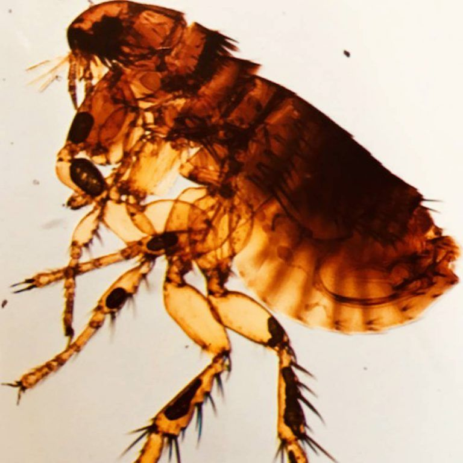
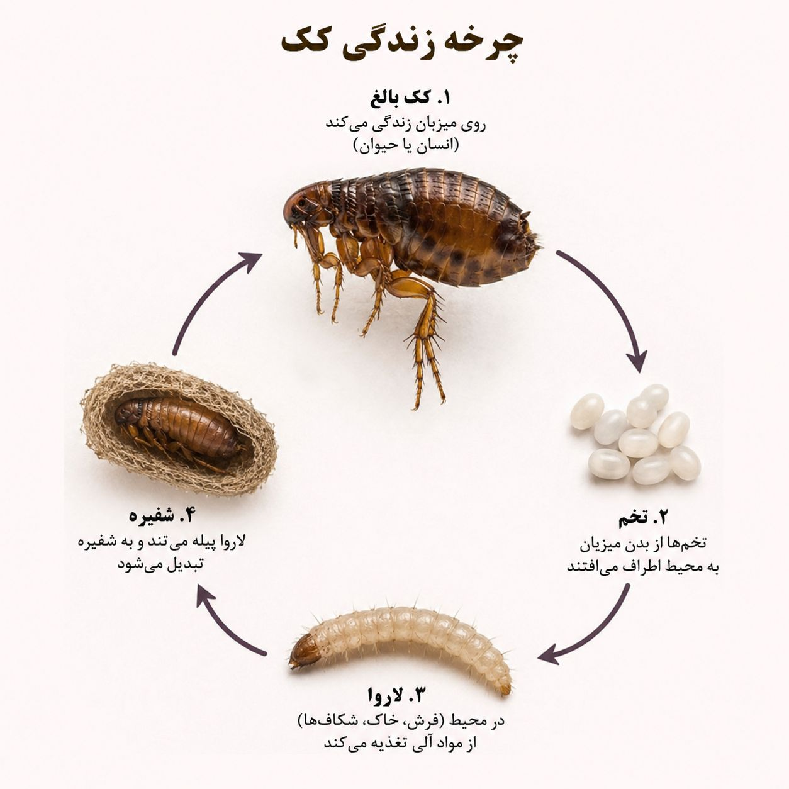
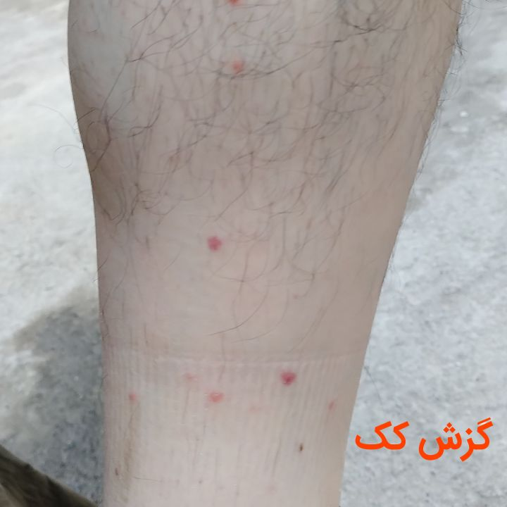

شاید برای شما هم پیش آمده باشد که ناگهان متوجه گزشهای ریز و خارشدار روی پاها یا مچ پای خود شدهاید، بدون اینکه هیچ حشرهای را دیده باشید. یا شاید حیوان خانگیتان مرتب خود را میخاراند و بیقرار است. اینها میتوانند نشانههای حضور یک آفت کوچک اما بسیار مقاوم و خطرناک در خانه شما باشند: کک.
ککها حشرات کوچک، خونخوار و بسیار مقاوم هستند که از دوران باستان تاکنون، همراه با انسانها زندگی کردهاند. این حشرات نهتنها باعث خارش و ناراحتی میشوند، بلکه میتوانند ناقل بیماریهای جدی مانند طاعون، تیفوس و آلودگیهای انگلی باشند. با وجود پیشرفتهای پزشکی، ککها هنوز هم یکی از مهمترین ناقلین بیماریها در جهان محسوب میشوند.
در این مقاله جامع و تخصصی، شما را با همه چیز درباره کک، از بیولوژی و رفتارشناسی گرفته تا روشهای تشخیص، پیشگیری و مهمتر از همه، روشهای اصولی و تخصصی سمپاشی کک آشنا میکنیم. اگر شما هم در تهران یا سایر شهرهای ایران از دست ککها کلافه شدهاید و نگران سلامت خانواده و حیوانات خانگیتان هستید، این مقاله راهنمای کامل شما برای کنترل ککها در خانهتان خواهد بود.
ککها حشرات کوچکی از راسته سیفونآپترا (Siphonaptera) هستند که بهعنوان انگلهای خارجی، از خون پستانداران و پرندگان تغذیه میکنند. این حشرات بدنی فشرده، پهن و بدون بال دارند و بهخاطر پاهای عقب بسیار قویشان، توانایی پرشهای بلند (تا ۲۰۰ برابر طول بدن خود) را دارند.
| ویژگی | توضیح |
|---|---|
| اندازه | ۱ تا ۴ میلیمتر (نرها کوچکتر از مادهها) |
| رنگ | قهوهای تیره تا سیاه براق |
| بدن | فشرده، پهن و بدون بال، پوشیده از موهای ریز |
| پاهای عقب | بسیار قوی و مناسب برای پرشهای بلند |
| قطعات دهانی | مکنده و سوراخکننده (برای تغذیه از خون) |
| طول عمر | ۲ تا ۳ ماه (اما میتوانند ماهها بدون غذا زنده بمانند) |
| تغذیه | مادهها و نرها هر دو از خون تغذیه میکنند |
| تخمگذاری | هر ماده روزانه ۲۰ تا ۵۰ تخم میگذارد |

چرخه زندگی کک شامل چهار مرحله است که کامل شدن آن میتواند از ۲ هفته تا چند ماه طول بکشد، بسته به شرایط محیطی:
| گونه کک | میزبان اصلی | خطر برای انسان |
|---|---|---|
| کک گربه (Ctenocephalides felis) | گربه، سگ و حیوانات خانگی | بالا (ناقل بیماریها) |
| کک سگ (Ctenocephalides canis) | سگ و سایر سگسانان | متوسط تا بالا |
| کک انسان (Pulex irritans) | انسان و خوک | بسیار بالا (ناقل طاعون) |
| کک موش (Xenopsylla cheopis) | موش و سایر جوندگان | بسیار بالا (ناقل طاعون و تیفوس) |
| کک مرغی (Ceratophyllus gallinae) | پرندگان و طیور | متوسط (آلرژیک) |
تشخیص بهموقع ککها، کلید موفقیت در کنترل سریع آنهاست. این نشانهها را جدی بگیرید:

ککها یکی از مهمترین ناقلین بیماریها در تاریخ بشر هستند. این حشرات با تغذیه از خون میزبانهای مختلف، میتوانند عوامل بیماریزا را از یک میزبان به میزبان دیگر منتقل کنند.
| بیماری | عامل بیماریزا | ناقل (گونه کک) | علائم اصلی |
|---|---|---|---|
| طاعون (بوبونیک) | باکتری Yersinia pestis | کک موش (Xenopsylla cheopis) | تب شدید، تورم غدد لنفاوی، لرز، ضعف عمومی |
| تیفوس موشی | باکتری Rickettsia typhi | کک موش و کک گربه | تب، سردرد شدید، بثورات پوستی، درد عضلانی |
| تب ناشی از گزش کک | باکتری Bartonella henselae | کک گربه و کک سگ | تب، تورم غدد لنفاوی، خستگی |
| آلرژی به بزاق کک | واکنش آلرژیک | همه گونههای کک | کهیر، خارش شدید، تورم، التهاب |
| کرم نواری (Dipylidium caninum) | انگل کرم نواری | کک گربه و کک سگ | مشکلات گوارشی، کاهش وزن، خارش مقعدی |
ککها بهطرز شگفتآوری میتوانند به خانه نفوذ کنند. مهمترین راههای ورود:
| مسیر ورود | توضیح |
|---|---|
| حیوانات خانگی | رایجترین راه ورود. ککها از طریق سگها و گربههای آلوده وارد منزل میشوند. |
| جوندگان (موش، سنجاب و...) | موشها ناقل اصلی ککهای بیماریزا هستند و میتوانند کک را به خانه و محیط اطراف منتقل کنند. |
| پوشاک و وسایل شخصی | ککها میتوانند روی لباسها، چمدانها و وسایل مسافرتی وارد خانه شوند. |
| مبلمان و وسایل دست دوم | خرید مبلمان، فرش یا وسایل دست دوم که قبلاً آلوده بودهاند. |
| حیاط و فضای سبز | ورود کک از طریق حیاط، باغچه و مناطقی که حیوانات ولگرد در آن تردد دارند. |
| کود حیوانی تازه | کود حیوانی (مانند کود گاوی، اسبی یا مرغی) که بهعنوان کود تقویتی برای باغچه یا گلدانها استفاده میشود، یکی از مهمترین منابع آلودگی به کک است. ککها و تخمهای آنها بهشدت در کودهای تازه حیوانی تکثیر میشوند و میتوانند از این طریق وارد محیط زندگی شما شوند. اگر از کود حیوانی تازه در باغچه یا گلدانها استفاده میکنید، حتماً آن را بهطور کامل پاستوریزه یا ضدعفونی کنید و یا از کودهای صنعتی و فرآوریشده استفاده نمایید. |
| حیوانات ولگرد | سگها و گربههای ولگرد در حیاط و اطراف ساختمان، منبع اصلی ککها هستند. |
کنترل کک یکی از چالشبرانگیزترین عملیاتهای کنترل آفات است، زیرا چرخه زندگی آنها شامل مراحل مختلفی است که برخی از آنها (شفیره) در برابر سموم بسیار مقاوم هستند. به همین دلیل، روشهای خانگی و اسپریهای معمولی معمولاً کارساز نیستند.
در شرکت سمپاشی نانوفناوران، از روش مدیریت تلفیقی آفات (IPM) برای کنترل مؤثر کک استفاده میکنیم که شامل مراحل زیر است:
گام اول و حیاتی، شناسایی دقیق نوع کک، نقاط تخمگذاری و لانههای آنها است. کارشناسان ما با بررسی کامل منزل و محیط اطراف، موارد زیر را مشخص میکنند:
قبل از سمپاشی، شستشو و نظافت دقیق محیط ضروری است:
پس از نظافت، نوبت به سمپاشی تخصصی میرسد. این کار باید توسط کارشناسان مجرب با استفاده از ترکیب مناسب سموم انجام شود.

بهدلیل مقاومت بالای تخمها و شفیرههای کک، معمولاً یک جلسه سمپاشی کافی نیست و ممکن است ۲ تا ۳ جلسه با فواصل ۲ تا ۴ هفته نیاز باشد تا تمام مراحل چرخه زندگی کک کنترل شود.
پس از کنترل مؤثر، کارشناسان ما نکات زیر را برای جلوگیری از بازگشت مجدد ارائه میدهند:
با رعایت این نکات، میتوانید از بازگشت مجدد ککها جلوگیری کنید:
هزینه سمپاشی کک به عوامل مختلفی بستگی دارد:
| عامل | تأثیر بر هزینه |
|---|---|
| مساحت محیط | هرچه محیط بزرگتر باشد، هزینه بیشتر است |
| شدت آلودگی | آلودگی شدید نیاز به عملیات گستردهتری دارد |
| وجود حیوانات خانگی | بررسی و درمان حیوانات، بخشی از عملیات است |
| مناطق آلوده | فضاهای باز، حیاط، باغچه و محیطهای بیرونی هزینه را افزایش میدهند |
| نوع روش کنترل | مهپاشی، سمپاشی تماسی، لاروکشی یا ترکیبی |
| تعداد جلسات | معمولاً ۲ تا ۳ جلسه نیاز است |
💡 توصیه: برای دریافت مشاوره رایگان و استعلام دقیق هزینه، با کارشناسان ما تماس بگیرید.
سموم استفادهشده توسط شرکت نانوفناوران با رعایت کامل استانداردهای بهداشتی انتخاب میشوند. در هنگام سمپاشی، افراد و حیوانات از محیط خارج میشوند و پس از تهویه کامل، محیط ایمن است.
اثر سمپاشی در ککهای بالغ فوری است. اما برای از بین بردن تخمها و شفیرهها، معمولاً ۲ تا ۴ هفته زمان نیاز است. به همین دلیل، ممکن است ۲ تا ۳ جلسه سمپاشی توصیه شود.
استفاده از اسپریهای خانگی معمولاً مؤثر نیست و فقط ککهای سطحی را از بین میبرد. کنترل تخم و شفیره نیاز به تجهیزات، دانش و سموم تخصصی دارد.
بله، معمولاً ۲ تا ۴ ساعت باید محیط را ترک کنید تا سموم تهویه شوند. کارشناسان زمان دقیق را به شما اعلام میکنند.
خیر. ککهای بالغ روی میزبان (حیوان یا انسان) زندگی میکنند، اما تخم، لارو و شفیره آنها در محیط (فرش، مبلمان، شکافها) قرار میگیرند.
بله، ککها ناقل بیماریهای جدی مانند طاعون، تیفوس موشی و برخی بیماریهای انگلی هستند. با این حال، احتمال انتقال بیماری در محیطهای شهری کم است.
ککها یکی از مقاومترین و خطرناکترین آفات خانگی هستند که میتوانند سلامت خانواده و حیوانات خانگی شما را تهدید کنند. تشخیص بهموقع و اقدام سریع، کلید جلوگیری از گسترش آلودگی است. در حالی که روشهای خانگی میتوانند برای آلودگیهای محدود مفید باشند، برای کنترل مؤثر، استفاده از خدمات تخصصی ضروری است.
شرکت سمپاشی نانوفناوران بهداشت تهران با بیش از ۱۵ سال تجربه، مجوز رسمی از وزارت بهداشت و استفاده از تجهیزات مدرن و سموم استاندارد، آماده ارائه خدمات در زمینه سمپاشی کک در تهران و حومه است. تیم کارشناسان ما با شناسایی دقیق منبع آلودگی و استفاده از روشهای ایمن مانند مهپاشی، سمپاشی تماسی و لاروکشی، محیطی امن و آرام را برای شما فراهم میکنند.
🚀 همین حالا اقدام کنید:
📞 تماس فوری: ۰۹۱۲۰۷۰۵۷۴۶
💬 درخواست مشاوره رایگان: از طریق واتساپ یا ایتا
🔗 مشاهده سایر خدمات: کنترل آفات مسکونی
🏠 خدمات مرتبط: سمپاشی منازل مسکونی